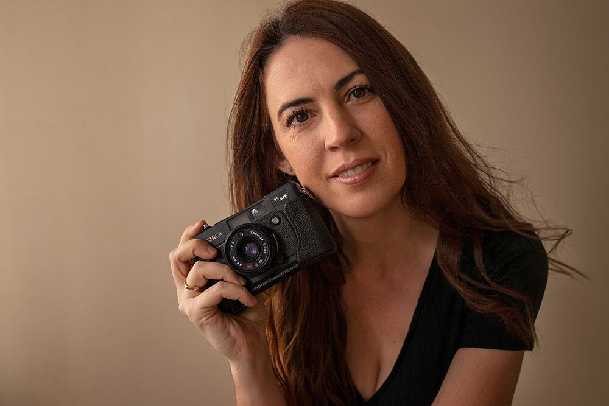

Empecé con la fotografía cuando era adolescente. Mi padre me regaló una cámara analógica y desde ese momento me apasioné por capturar momentos únicos. Comencé fotografiando paisajes y poco a poco fui explorando otros tipos de fotografía.
Me encanta la fotografía de retratos. Hay algo muy especial en capturar la esencia de una persona a través de la lente. También disfruto mucho de la fotografía de naturaleza, especialmente cuando se trata de capturar la luz en el amanecer o el atardecer.
Mi proyecto más desafiante fue un reportaje fotográfico en una reserva natural en la Patagonia. Las condiciones climáticas eran extremas, pero logré capturar imágenes increíbles de la fauna y los paisajes. Fue una experiencia que me marcó mucho como profesional.
Para mí, lo esencial es una cámara DSLR de buena calidad, un lente de 50mm para retratos, y un teleobjetivo para fotografía de naturaleza. También siempre llevo conmigo un trípode y filtros polarizadores para mejorar las tomas en exteriores.
Me inspiro viajando y explorando nuevos lugares. La naturaleza, las diferentes culturas y las personas que conozco en el camino son una fuente constante de inspiración para mis proyectos fotográficos.
Les diría que practiquen mucho, que no tengan miedo de experimentar y que no se desanimen si al principio no logran los resultados que desean. La perseverancia es clave en este campo, al igual que la pasión por lo que haces.
Puedes seguir a María y ver más de su trabajo en Instagram.